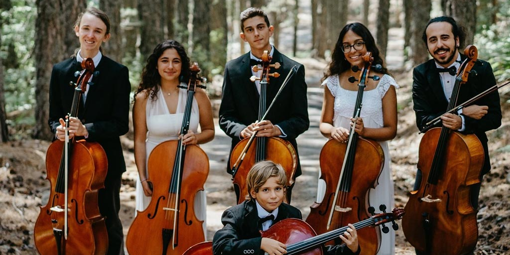
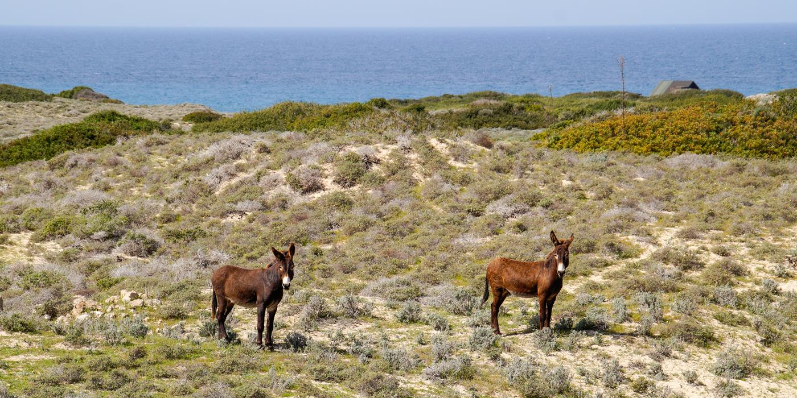
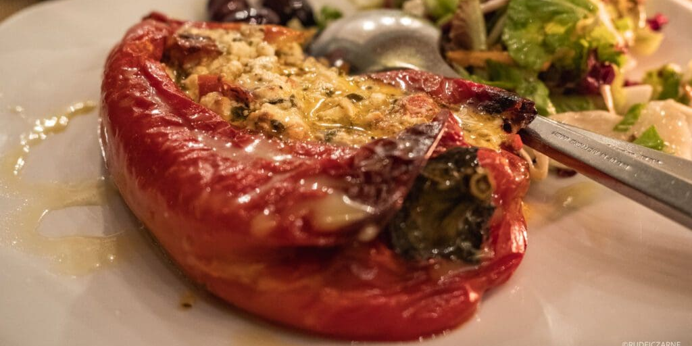
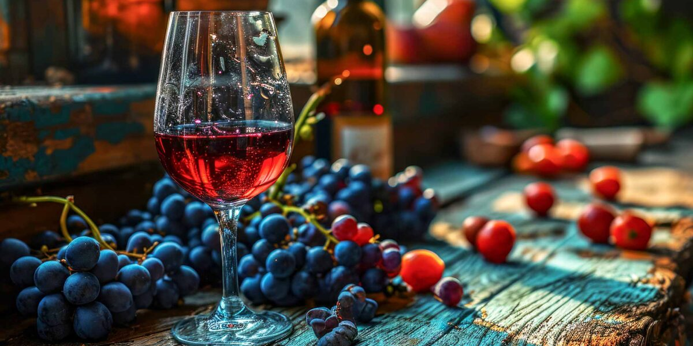
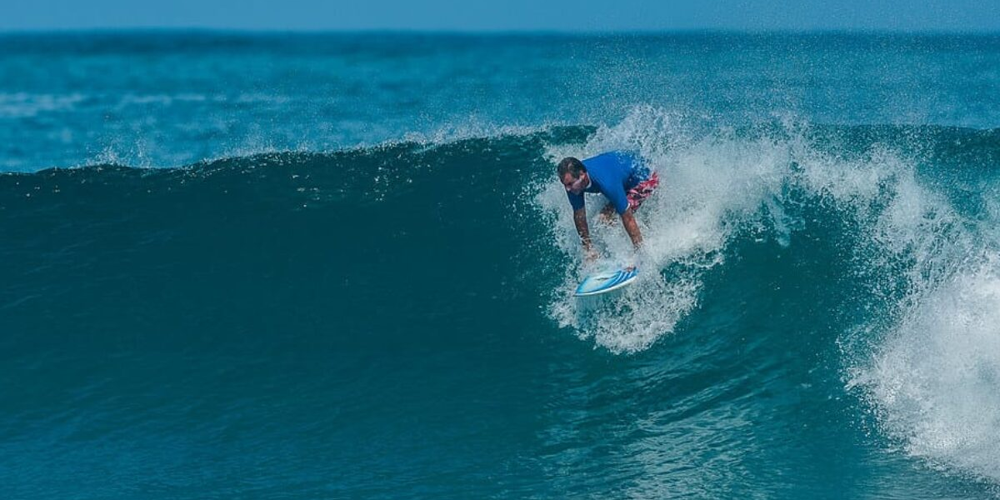
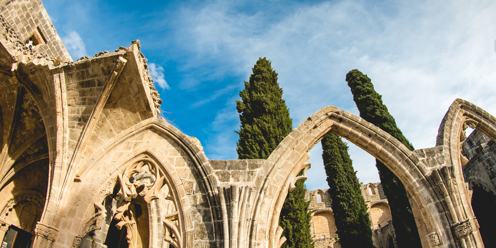
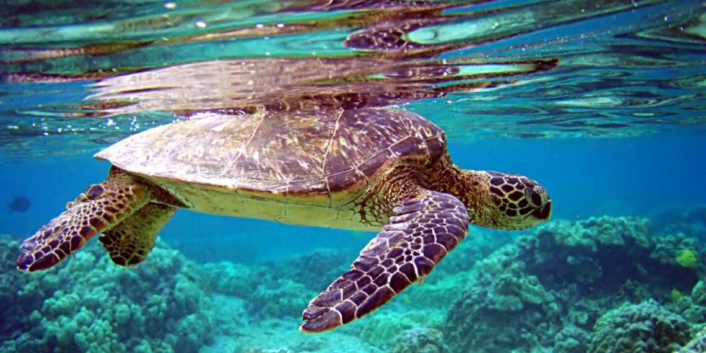
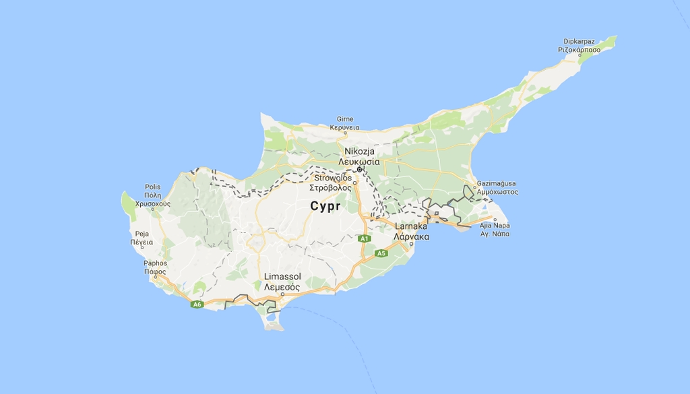
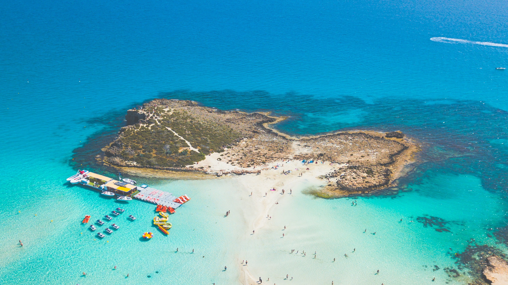

Wyjątkowe doświadczenia


Jeżeli wybierasz się na Cypr, wszystko czego potrzebujesz, aby zaplanować idealną wycieczkę znajdziesz na tej stronie internetowej - od informacji i faktów, po ciekawe pomysły na spędzenie czasu. Niezależnie od pory roku, Cypr dostarcza wielu możliwości, aby doświadzczyć czegoś nowego, interesującego i ekscytującego, są to m.in. atrakcje, wydarzenia, zwyczaje oraz miejsca, które są wyjątkowe i szczególnie charakterystyczne dla wyspy.







Podróżuj na Cypr z pełnym spokojem

Cypr jest obsługiwany przez dwa międzynarodowe lotniska w Larnace i Pafos, które łączą wyspę z największymi europejskimi miastami. Wsparcie podczas Twojego pobytu zapewnia szeroki wachlarz pomocy oferowany przez biura informacji turystycznej, opiekę medyczną oraz pomoc w nagłych wypadkach. Numery ratunkowe na Cyprze to 112 (policja, pogotowie ratunkowe, straż pożarna), 1460 (infolinia policji), 1441 (grupa poszukiwawczo-ratunkowa).
Słońce i morze
Cypr oferuje niezliczoną liczbę wrażeń w zacisznych zatokach oraz tętniących życiem kurortach. Można znaleźć tam plażę i skaliste zatoczki. Oprócz leniuchowania na gorącym piasku można podziwiać głębię Morza Śródziemnego. Sama bogini Afrodyta narodziła się z morskiej piany w Pafos. Można spróbować swoich sił w łowieniu ryb podczas rejsu wędkarskiego, lub odkrywać jaskinie w różnych miejscach wybrzeża podczas wycieczki łodzią.

Podróż po wyspie
Podróżowanie pod Cyprze jest bezpieczne i stosunkowo tanie. Najlepszą opcją jest wynajęcie samochodu (ruch lewostronny), choć dobrze funkcjonuje transport autobusowy który można podzielić na dwa rodzaje: regionalny i miedzymiastowy. Transport regionalny dotyczny miast i otaczających ich regionów. W Pafos działa przewoźnik Osypa, w Limassol EMEL, a w Nikozji i Larnace CYPRUS PUBLIC TRANSPORT. Famagusta obsługuje przewoźnika OSEA.
Gastronomia
Kuchnia cypryjska nie odędzie się bez "Meze" - różnorodnych małych dań połączonych w istną ucztę, która doskonale umożliwia poznanie autentycznych i lokalnych smaków: dipów, których nie można mieć dość; mięs duszonych lub gotowanych w glinianych naczyniach; świeżo złowionych ryb; nasion i roślin strączkowych w rozmaitych sosach; wyjątkowych serów; a także innych mniej oczywistych smakowitości.
Nurkowanie
Cypr to raj dla nurków, przyciąga turystów z całego świata ze względu na korzystne warunki pogodowe, najwyższej klasy wraki oraz różnorodną morską florę i faunę. Ciepłe wody o temperaturze od 16 do 27°C są niemal przez cały rok, co sprawia że na wyspie panuje jeden z najdłuższych sezonów nurkowania w basenie Morza Śródziemnego. Podwodne jaskinie i tunele są gwarancją odkrycia czegoś wyjątkowego. Wyspa obfituje w kolorowe ryby, koralowce, ukwiały, ośmiornice, małże i jeżowce.